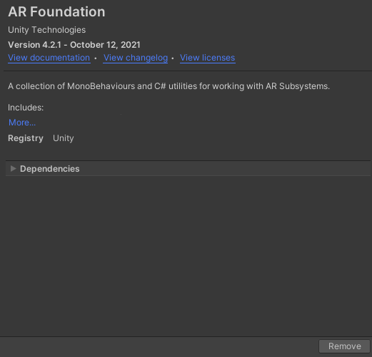
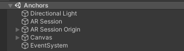
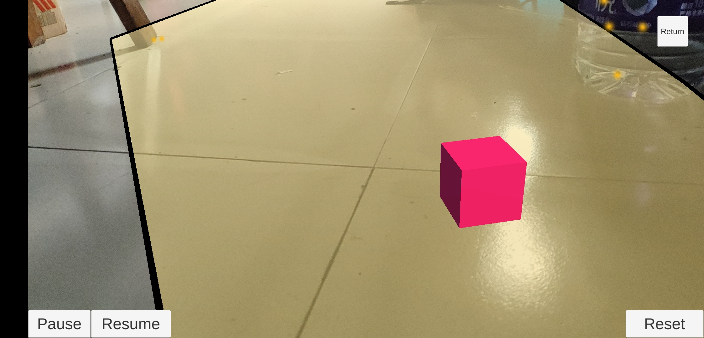
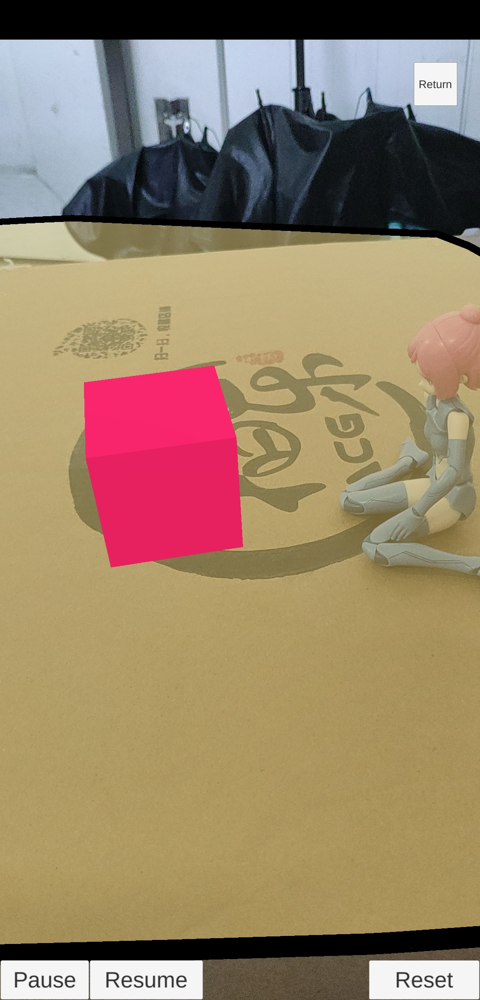

本篇主要介绍了如何通过ARFoundation来简单的在摄像头中的现实世界生成一个物体。
此篇文章基于ARFoundation 4.2.1 撰写，不确定在以后的时效性如何，还请留意。
在Unity中快速上手ARFoundation
前置要求
在使用ARFoundation之前需要注意
- 安卓设备需要将API版本最低要求设置在7.0或以上，且需要关闭对Vulkan图形api的支持
- IOS设备需要将最低版本设置在11.0或者更高，同时勾选需要ARkit支持，将构架设为ARM6
- 同时请注意ios与Android提供的AR功能会有所不差异。
创建AR对象
首先需要我们将package添加到Unity中

然后在场景中添加如下内容

此时，我们能够注意到在AR session origin下已经包含了一个AR camera，该camera会取代原来的main camera，根据设备摄像头的位置来自动将现实坐标转化为unity中的空间坐标。
了解Trackable objects
在启动ar时，此时的坐标会被视作0，0，0，当探测到其他物体时，AR session origin会在运行时创建的Trackables对象下生成。以下是Unity所提供的所有可以被追踪的对象。
| Trackable Manager | Trackable | Purpose |
|---|---|---|
| ARPlaneManager | ARPlane | Detects flat surfaces. |
| ARPointCloudManager | ARPointCloud | Detects feature points. |
| ARAnchorManager | ARAnchor | Manages anchors. You can manually add and remove them with ARAnchorManager.AddAnchor and ARAnchorManager.RemoveAnchor. |
| ARRaycastManager | ARRaycast | Repeats and updates a raycast automatically. |
| ARTrackedImageManager | ARTrackedImage | Detects and tracks 2D images. |
| AREnvironmentProbeManager | AREnvironmentProbe | Creates cubemaps that represent the environment. |
| ARFaceManager | ARFace | Detects and tracks human faces. |
| ARTrackedObjectManager | ARTrackedObject | Detects 3D objects. |
| ARParticipantManager | ARParticipant | Tracks other users in a multi-user collaborative session. |
在这之中的PointCloud看起来可能比较特殊，这里简单解释一下。AR的运动轨迹追踪主要是通过特征点（FeaturePoint）及其相对关系来实现的，而一部分相互关联的点就是一个PointCloud。
虽然一个特征点是无法被追踪的，但是PointCloud被视作是可追踪的。
对于每个对象的变动，Unity还提供了接口方便使用，这部分内容具体请参照Unity官方文档。
值得注意的一点是，以上所有功能都是可以选择开关的，在性能开销有限的情况下注意合理关闭部分功能。
生成物体
生成物体实现起来其实比较简单
1 | void Update() |
在我们获取了玩家的触摸操作之后，我们会发射一条ar射线，当碰到多边形平面时，就返回首个碰撞坐标，然后再调用ARSessionOrigin.MakeContentAppearAt()来生成物体即可。
这里有个小技巧，我们可以通过调大AR session origin的scale来反向调整物体的大小，比如调成10，实际显示的大小就为0.1。
测试样例


可以看到在有机娘等外界物体干扰的情况下识别其实还是有点飘的，但是总体效果还是不错。